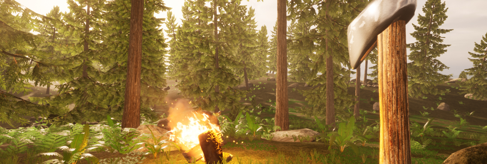
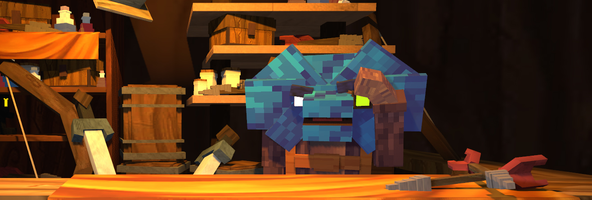
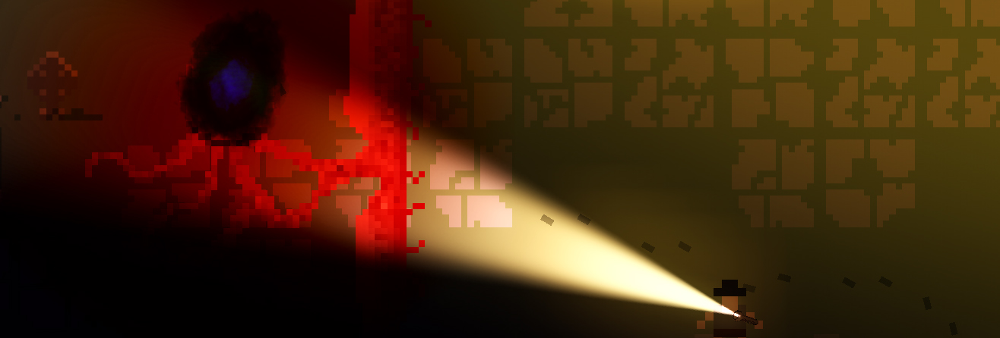

Solyanka | 2/11/2021
Solyanka is a game I created while learning Unreal Engine 4, as following a linear tutorial of someone making a game really isn't how I learn best. While developing, I learned a vast amount of things about Unreal Engine. Summing up most of what I learned includes: A.I. with behavior trees and blackboards, understanding the importance of not using EventTick excessively, widgets and user interface, blueprint programming, using blender to create 3D models, landscape tools, utilizing a day/night cycle, using Megascans' Assets and just generally the Unreal Editor.

IsoArcher | Github | 9/30/2020
IsoArcher is a collaborative game I made with my best-friend Stephen Schaefer. He worked on the art side of things, while I worked on programming. It's a simple game about shooting goblins with arrows, and using gold to upgrade your weapon. This was my first time working in a 3D environment, as well as creating a game in C#. This particular game taught me a lot about working with another person, and how to structure the game based on that fact.

FarmNer is the second game I've ever made. It was made using the Godot game engine in GDScript. It is a horror game with a health bar, item looting, and AI that can target and attack you. This particular game taught me how to use Godot's tools more efficiently and how to manage a larger game.

Gunnkour is the first game I've ever made. It was made using the Godot game engine in GDScript. It is a platformer game that uses gun physics to propel you to make longer jumps. This particular game game taught me a huge amount about the game development process from start to finish. It was my first real time attempting to create something in the form of a game, using what I learned in school to apply to game development.